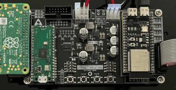
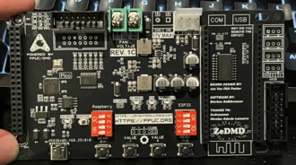

PPUC-DMD
PPUC-DMD is a ZeDMD capable of displaying Serum v1 and v2 colorizations on real pinball machines.
Releases
2025-12-01 - New DMDreader version
DMDreader [0.5.0]: (Link to official release)
- fixed SPIKE frame detection
- removed STDIO over USB support for easier updates (no BOOTSEL required)
- added Arduino framework support
- switched to platformio based builds
- simplified clock count programs
- blink while auto-detecting system using a 500ms interval
- cleaned up buffer handling
- use second core exclusively for SPI
- added alphaDMD support for SAM and SPIKE
IMPORTANT:
- use dmdreader-ppucdmd.zip for PPUC/DMD
- use dmdreader-alphadmd.zip for alphaDMD
- dmdreader-ppucdmd2.zip is an experimental build for PPUC/DMD 2, which has not been released yet
2025-11-23 - New PPUC/DMD version
PPUC/DMD [0.4.0]:
- Added support for the .cROMc format
- Increased performance:
- Increased transmission of incoming frames
- Faster colorizing thanks to .cROMc
- Shorter colorization loading time thanks to .cROMc
The hardware components
Currently the hardware consists out of 4 main components:
- Raspberry Pi
- RP2040
- ESP32-S3-N16R8
- PPUC-DMD Carrier PCB
IMPORTANT!
During the distribution of PPUC-DMD units between July 2025 and November 2025, two main variants have been in circulation. One is a PPUC-DMD Carrier PCB with a Raspberry Pi Pico attached via soldered pin headers (REV. 1A & REV. 1B), while the other has the Pico directly integrated into the carrier board (REV. 1C). The software update procedure differs slightly between these two versions, so please pay attention to which variant you are working with.
See both variants here:


The software components
PPUC-DMD consists out of 3 seperate software pieces:
- DMDreader (Pico/RP2040)
- Reads DMD frames and sends to ZeDMDos
- ZeDMDos (Raspberry Pi)
- Colorizes the DMD frames and sends data to ZeDMD
- ZeDMD (ESP32-S3-N16R8)
- Sends out color data to the RGB panels
Updating the software
Updating the software of PPUC/DMD is rather simple. What will be required for these steps is the following:
- Micro SD card reader
- USB-C to USB-A or Micro USB to USB-A cable (depending on USB port leading to RP2040/Pico)
- Basic computer skills
First we will start off with updating DMDreader. Then updating ZeDMDos. Lastly there is a mini tutorial on how to install or update colorization files.
Updating DMDreader
- Download
dmdreader-ppucdmd.zip. Click here to go to the latest release!. Check your downloads folder and unzip/unpack. You should see a file nameddmdreader-ppucdmd.uf2in the extracted folder. This file is what will be flashed onto the RP2040 chip. - Grab a USB cable. For most this will be a USB-C to USB-A cable. Others might need Micro USB to USB-A.
- Make sure game is turned off, WARNING: in case of owning a REV. 1A/B board, you must remove the Raspberry Pi Pico/RP2040 from the PPUC/DMD carrier PCB! The power trace is directly connected to the Rapsberry, so it NEEDS to be removed! When owning a REV. 1C board you don't have to worry, you can lay the DMD down for easy access to the USB-C port.
- On the RP2040/Pico microcontroller and REV. 1C board, you'll find a button labeled
BOOTSEL. This button enables software flashing mode. Watch this video for a demonstration! To enter this mode, hold down theBOOTSELbutton while connecting the USB cable from your computer to the RP2040/Pico. Once connected, a folder should appear on your computer namedRP2-B2. - Drag and drop the
dmdreader.uf2file into that folder, which was obtained in step 1. Wait a few seconds until theRP2-B2folder closes. - End of DMDreader flashing. Remove USB cable and in cases of REV. 1A/B boards, plug the RP2040/Pico back into the PPUC/DMD carrier board. Make sure all pins line up correctly!
Updating ZeDMDos and installing or updating the colorization file
Updating ZeDMDos requires a bit more work compared to DMDreader.
- Take a look at your Raspberry Pi, this is the bigger green board which is upside down over to the left. There should be a specific number on there, ranging from 1-45. This number tells you which software file you need to install in step 2.
- Install the required files. Click here to go to the folder! Having kept the number from step 1 mind, go to the
ZeDMDos software files - PPUC/DMD [0.4.0]folder and downloadYourNumberHere.zip. - All colorization files have received an update which decreases the loading time marginally. From the
Colorizationsfolder, click on the colorization of choice and download theserum.cROMcfile. Keep this file as is and do not rename it. - Take the Micro SD card out of your Raspberry Pi. IMPORTANT: the supporter editions are hardware protected, you have to reuse the same SD card! Now get a MicroSD card reader, or a laptop which has the correct slot built in. Boot up your PC or laptop and insert the MicroSD card. Click here for a video on how to update the ZeDMDos software!
End of installation. Now plug your Micro SD card back into your Raspberry Pi. And of course, boot up the game to see if all is well :)
Installing or updating a colorization file
- Installing a new colorization file is easy. Get the desired file, ideally a
.cROMcfile,.cRZis also supported, though needs to be converted into a.cROMby extracting the.cRZfile as if it is a zip file. In all cases the final name of the file should be eitherserum.cROMcorserum.cROM. Case sensitivity matters here! Failing to follow these guidelines will result in black and white DMD output. - When you have your file ready and waiting, open up the
colorizationsfolder on your Micro SD card, then navigate to theserumfolder. This is where you will place yourserum.cROMcorserum.cROMfile. Be sure to delete any previous files, or simply overwrite an existing one. You shouldn't have multiple files next to eachother in theserumfolder.
Something missing or wrong? You can fix it!
This website is edited by people like you! Is something wrong or missing? Is something out of date, or can you explain it better?
Please help us! You can fix it yourself and be an official "open source" contributor!
It's easy! See our Beginner's guide to editing the docs.
Page navigation via the keyboard: < >
You can navigate this site via the keyboard. There are two modes:
General navigation, when search is not focused:
- F , S , / : open search dialog
- P , , : go to previous page
- N , . : go to next page
While using the search function:
- Down , Up : select next / previous result
- Esc , Tab : close search
- Enter : go to highlighted page in the results